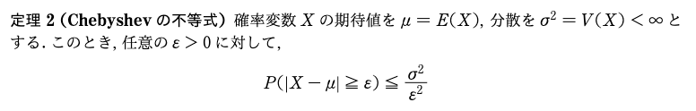
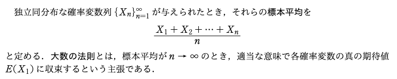
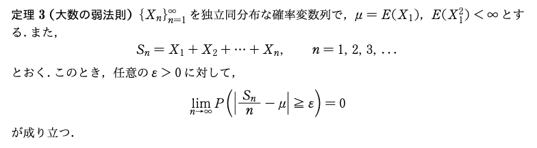

確率論基礎 · 第7回 · 本文約6分
Chebyshevの不等式と大数の弱法則
Chebyshevの不等式は何を言っている？
分散がわかれば、「平均から大きく離れる確率」の上限がわかる。

μは平均、σ²は分散、ε > 0は「どれだけ離れるか」の基準です。左辺は、Xが平均よりε以上大きい、またはε以上小さい確率。それが右辺以下だと言っています。
例えば、平均50、分散4なら、平均から6以上離れる確率は、最大でも4 ÷ 6² = 1/9（約11.1％）。つまり、X ≤ 44 または X ≥ 56となる確率は、約11.1％以下です。
値の分布の形を知らなくても、平均と有限な分散だけで使えます。「確率がちょうど1/9」という意味ではなく、それ以下だと保証する式です。
原資料
確率論基礎 演習問題・第7回資料の「定理2」。提示画像の範囲のみを解説しています。
確率変数列と標本平均を、サイコロで理解する
X₁は「1回目の出目を表す確率変数」、X₂は「2回目の出目を表す確率変数」です。それらの平均も確率変数で、実際に振ると具体的な数値が決まります。

1．確率変数は「取り得る値の集合」とは違う
質問 確率変数は、特定の結果を表すわけではないですよね。サイコロならX₁は「1〜6の集合」なのでしょうか。「X₁ = 5」とはどう違いますか。
「確率変数だから、特定の結果を指しているわけではない」という理解は合っています。ただし、X₁ = {1, 2, 3, 4, 5, 6}とは書きません。この集合は、X₁が取り得る値の集合です。X₁そのものは、試行の結果に応じて数値を返すものです。
例えば、サイコロを何度も振る実験全体の結果がω = (5, 2, 6, …)だったとします。「その結果から1回目の出目を取り出す」のがX₁なので、X₁(ω) = 5です。同じ結果から2回目を取り出せばX₂(ω) = 2になります。数学的には、このような結果ωに数値を対応させる関数が確率変数です。
したがって、「X₁ = 5」という書き方も使います。P(X₁ = 5)なら「1回目に5が出るという出来事の確率」という意味です。観測後に「X₁ = 5だった」と言うこともありますが、確率変数そのものと得られた値を区別するときは、観測値を小文字でx₁ = 5と書きます。
2．X₂は「2回目の出目」。添字は回数を表す
質問 確率変数列とは何ですか。X₁がサイコロの出目を表すなら、X₂は何を表すのでしょうか。
X₁、X₂、X₃、…と、順番に番号を付けて並べたものが確率変数列です。サイコロなら、Xᵢは「i回目に出る目」を表します。どのXᵢも1〜6の値を取りますが、取り出す回が違います。
公平なサイコロを毎回独立に振る場合、どの回でも各目の確率は1/6です。これが同分布です。また、1回目の結果を知っても2回目の各目の確率は変わりません。各回がこのように互いに影響しないことが独立です。同分布は「毎回同じ値が出る」という意味ではありません。
3．標本平均にも「確率変数」と「観測した値」がある
質問 標本平均は、実際に得られたn個の結果を平均したものではないのですか。なぜ確率変数X₁、…、Xₙを使って書けるのでしょうか。
「特定の結果をn個並べて平均する」という理解も合っています。それは観測後の標本平均の値です。観測前から、その計算を確率変数で表したものも標本平均と呼びます。
| 何を表すか | 3回振る例 |
|---|---|
| 各回の確率変数 | X₁、X₂、X₃ |
| 標本平均という確率変数 | X̄₃ = (X₁ + X₂ + X₃)/3 |
| 実際に得た値 | x₁ = 5、x₂ = 2、x₃ = 6 |
| 標本平均の実現値 | x̄₃ = (5 + 2 + 6)/3 = 13/3 |
同じ3回の実験でも、(1, 1, 1)なら平均は1、(6, 6, 6)なら6です。結果によって平均も変わるので、標本平均自体が確率変数になります。大数の弱法則は、この平均について「期待値からずれる確率」を論じています。
4．なぜE(X₁)？ E(X₂)も同じだから
質問 なぜ収束先がE(X₁)なのですか。E(X₂)や、それ以降の確率変数の期待値は関係ないのでしょうか。
同分布なので、期待値もすべて同じです。この共通の期待値をμと置き、代表としてE(X₁)と書いているだけです。E(X₂)と書いても同じ値です。
E(X₁) = E(X₂) = ⋯ = μ
公平なサイコロなら、μ = (1 + 2 + 3 + 4 + 5 + 6)/6 = 3.5です。1回目だけを特別扱いしているわけではなく、すべての回に共通する分布の平均が3.5なのです。
5．nを増やすと何が変わるのか
質問 標本平均は、なぜnを増やすと共通の期待値に近づくのでしょうか。nを増やすことで何が変わるのですか。
標本平均の期待値は、実はnが1でも、10でも、最初からμです。期待値の線形性から、E(X̄ₙ) = {E(X₁) + ⋯ + E(Xₙ)}/n = μとなります。けれども、実際に得られる平均が毎回μになるわけではありません。
nを増やすと小さくなるのは、標本平均のばらつきです。各回の分散をσ²とすると、独立性によってV(X̄ₙ) = σ²/nになります。Chebyshevの不等式をこの標本平均に使うと、次が得られます。
P(|X̄ₙ − μ| ≥ ε) ≤ σ²/(nε²) → 0
どんな小さなε > 0でも、まずその値を固定してnを増やせば、ε以上ずれる確率が0に近づきます。これが次の定理3です。各回の出目が3.5に近づくのではなく、たくさんの出目を平均した値が3.5の近くに集まりやすくなる、と捉えてください。
原資料と補足の範囲
第7回資料の標本平均・大数の法則の説明。提示画像をそのまま掲載しました。サイコロの例、確率変数と実現値の区別、期待値と分散の計算は理解のための補足です。
大数の弱法則は何を言っている？
同じ条件の独立な試行をたくさん集めると、その平均が期待値から一定以上ずれる確率は、0に近づく。

式の読み方
X₁、X₂、…は、互いに独立で、同じ分布に従う確率変数です。Snはn個の合計なので、Sn/nは「n個の確率変数の平均」。μは、共通の分布から決まる期待値です。この定理では、二乗の期待値が有限であることも仮定します。
εは、先に決めておく「ずれの基準」です。式全体は、「観測した平均とμの差がε以上になる確率は、nを増やすと0に近づく」と読めます。εは0.1でも0.001でも、どんな正の値でも構いません。
具体例と注意点
例えば、公平なコインを独立に投げ、表を1、裏を0とします。すると、Sn/nは表の出た割合で、μ = 0.5です。ε = 0.1なら、「表の割合が0.4以下、または0.6以上になる確率」が、投げる回数を増やすと0に近づきます。
0に近づくのは「平均が一定以上ずれる確率」です。有限回で必ず平均がμになる、あるいは1回増やすたびに平均がμに近づく、という保証ではありません。こうした収束を「確率収束」と呼びます。
前のChebyshevの不等式とのつながり：平均の分散はσ²/nなので、ずれる確率の上限はσ²/(nε²)。nを増やすと、この上限が0に近づきます。
原資料
提示画像「定理3（大数の弱法則）」。第7回資料PDF。画像は受け取ったものをそのまま掲載しています。コインの例と末尾のつながりは理解のための補足です。